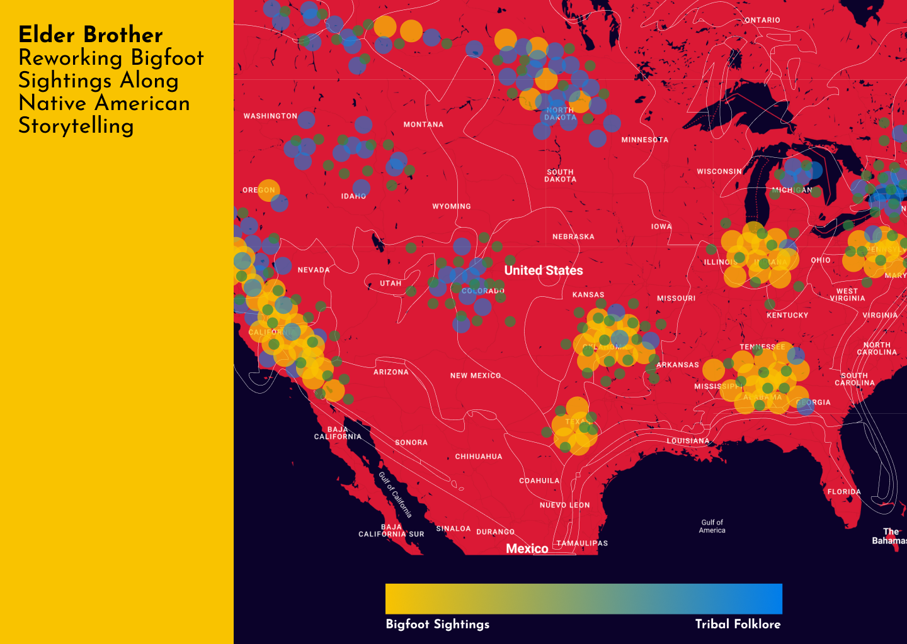
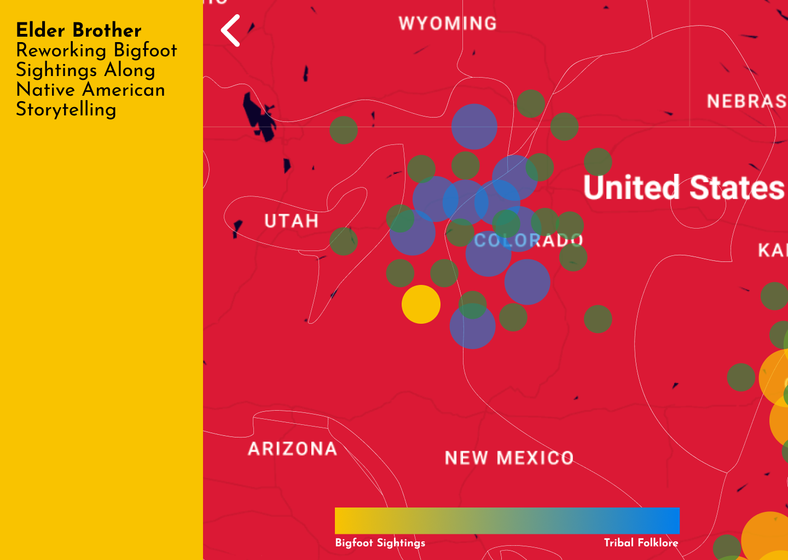

AIMS
To confront the critical issue of my productivity, being that I had a huge backlog of experiments and anchors I hadn't yet written up. Also to take a break from my other making and jump back into UI design whilst improving my workflow!
Especially after Vanessa's Experimental Mapping Workshop, I was struck with a moment of motivation to work within Figma more.


'Elder Brother', an experimental mapping outcome from Vanessa's workshop